Macbeth
A general hears a prophecy and cannot stop reaching for the crown. Follow every choice back to the page it came from.
Open bookYour AI Cultural Librarian


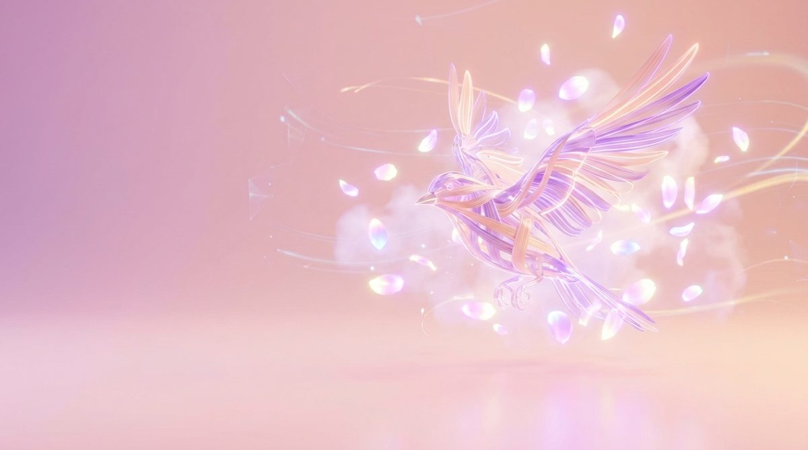

 01 / 08PhilosophyBrowse categories
01 / 08PhilosophyBrowse categories
Bring two characters together, from one book or two. Pick the pair, set a topic and listen.
Every answer labels what it is. Quotes are sourced, summaries are synthesized, and imagined voices are always marked.
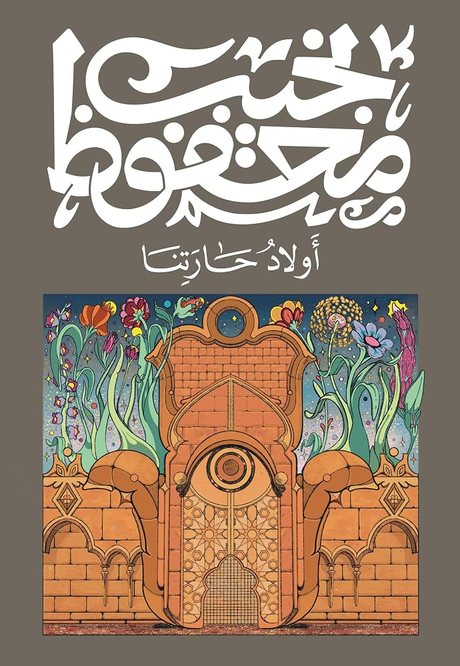
ARنجيب محفوظ
 EN
ENWilliam Shakespeare
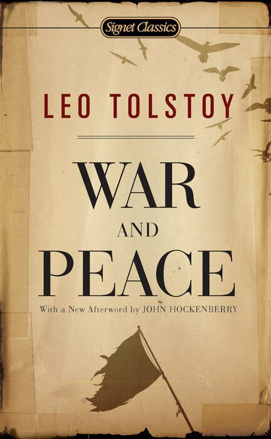
ENLeo Tolstoy
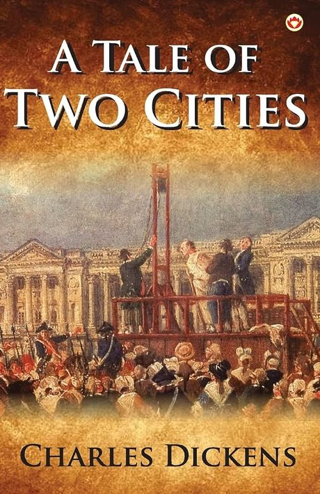
ENCharles Dickens
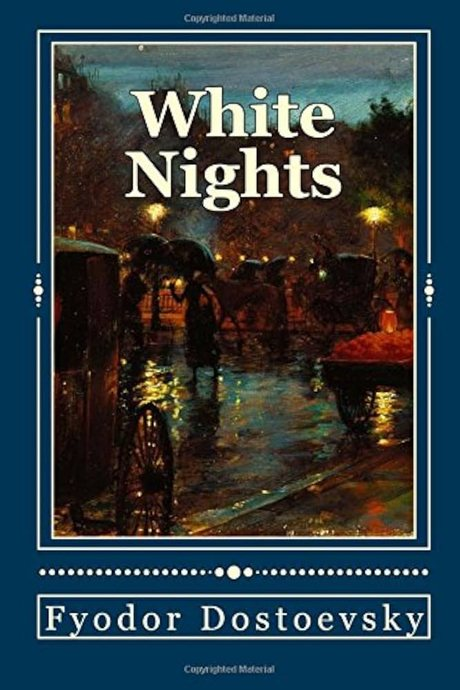
ENFyodor Dostoevsky
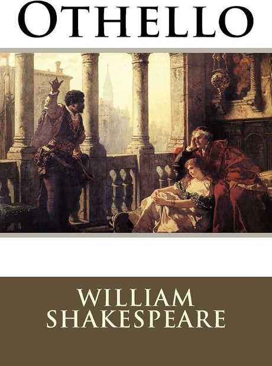
ENWilliam Shakespeare
 AR
ARأحمد مراد
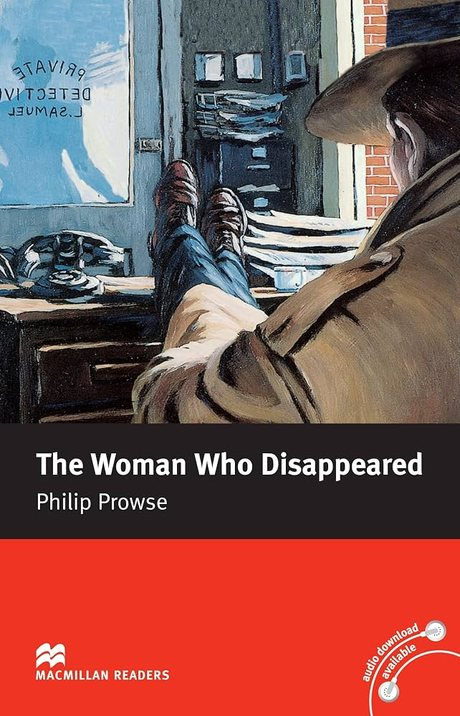
ENPhilip Prowse
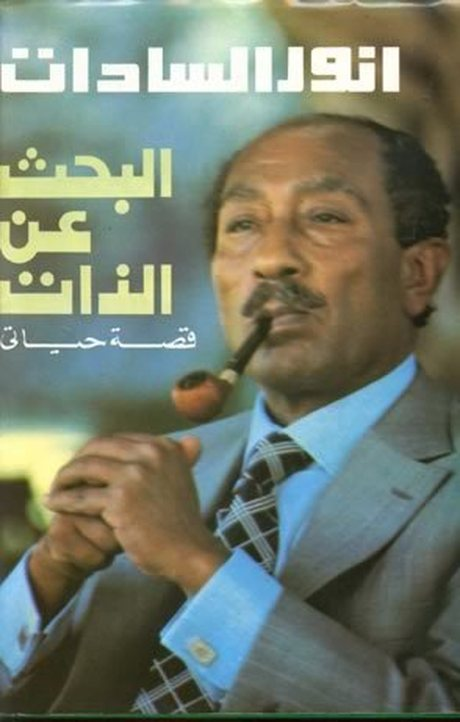
ARأنور السادات
 EN
ENRobert T. Kiyosaki
Choose a character to see where they appear and step into a conversation. Real figures are marked, and imagined conversations are always labeled.

A general hears a prophecy and cannot stop reaching for the crown. Follow every choice back to the page it came from.
Open book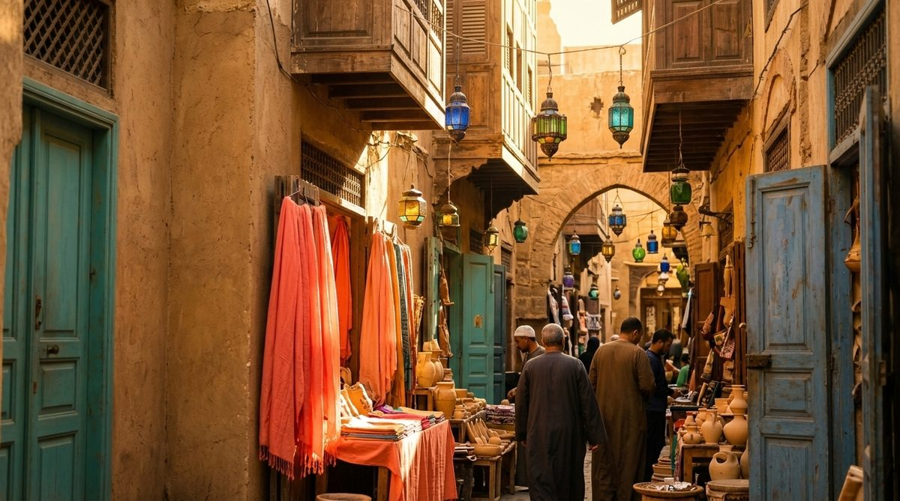
FeaturedAn alley, a founder who never appears, and generations arguing over his inheritance. Read it, then investigate it.
Open bookFive families, one invasion, and hundreds of names. A timeline keeps track of who knows what, and when.
Open bookFeaturedA trusted soldier, a handkerchief and a whispered lie. See how each character reads the same scene differently.
Open bookEight shelves to start from, in Arabic and English.
Ask about a book, a character or an idea. The Librarian answers beside the page you are reading.
Talk through a book out loud. Voice is for exploring, never for the reader.
Standard, Focus, Guide, Speed and Comfort, tuned for each language.
Shelves built around a theme, an era or a question.
Macbeth, Othello and the people who bring them down
Open collectionAllegory, thrillers and first-hand memoir
Open collectionEpic war and a quiet white night in Petersburg
Open collectionCities in turmoil and the people caught in them
Open collectionPractical reading on work and wealth
Open collectionA detective story at a learner’s pace
Open collectionBrowse books, meet characters and ask the Librarian as a guest. An account adds your shelves, notes and progress.
Start exploringYour AI Cultural Librarian
Ask about a topic, mood, or a theme you’re curious about.
Video · 3:24
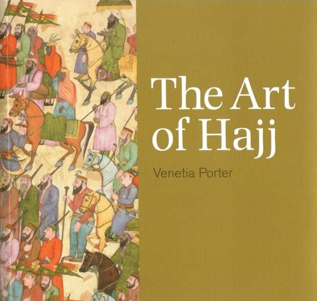
By UserImage
Audio
Image
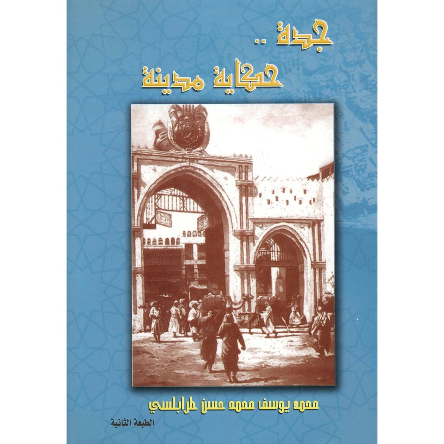
By Memory of a NationImage
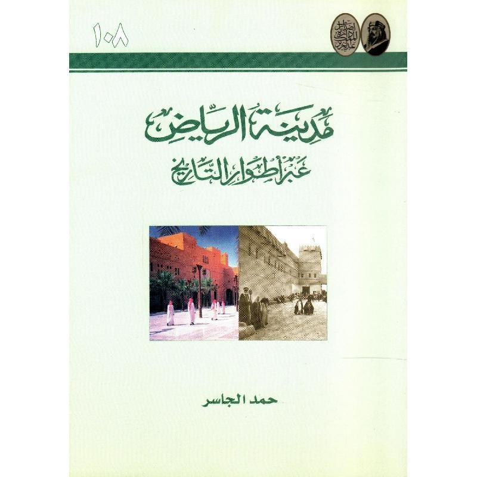
How did an oasis become a capital?
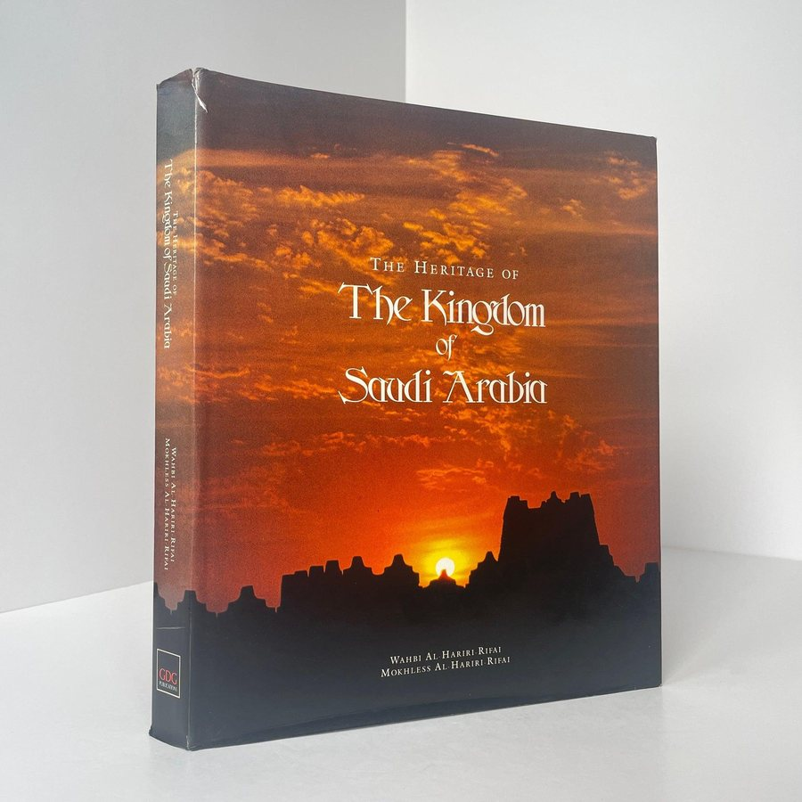
Which heritage site should everyone visit first?
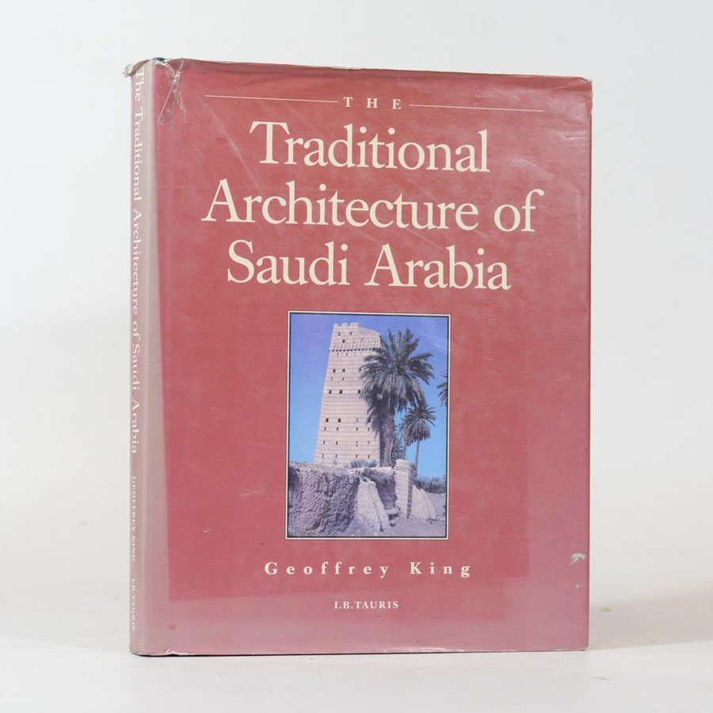
What can old houses teach modern cities?
Nothing matches your search yet.
Meet the people of the story and see where each of them goes.
Ask a question and both characters will answer in their own voice.
Bring two characters together, from one book or two.
Sign in to pick up where you left off.
Manage how you appear and what Memory of a Nation recommends.
Your Personal Library
All your saved books, conversations, and character encounters in one place.
Your Saved Books